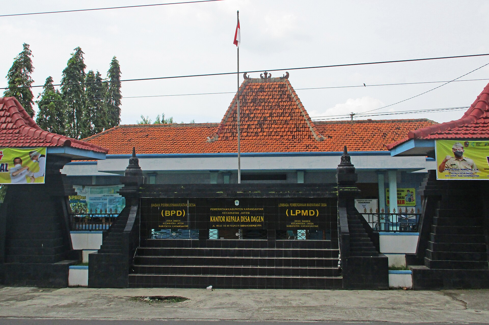
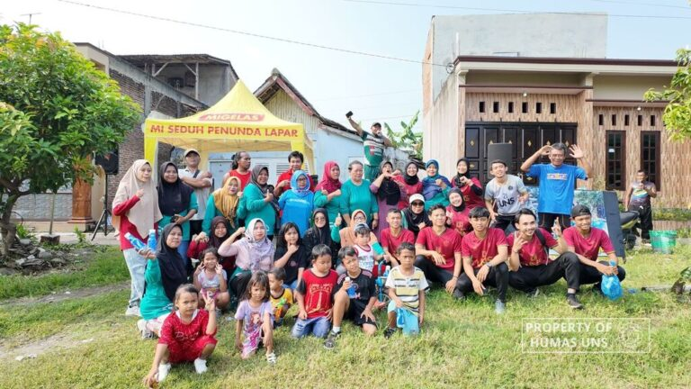
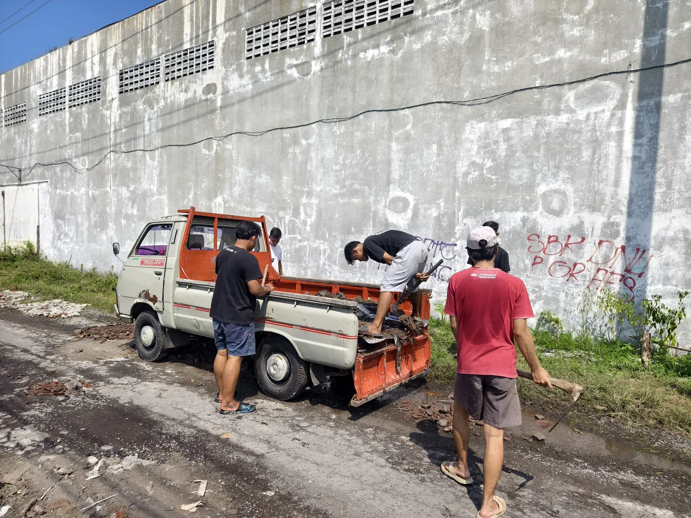
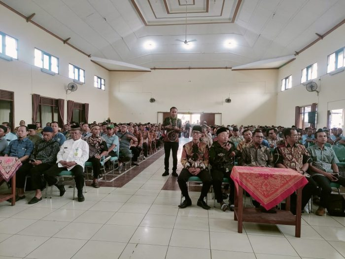
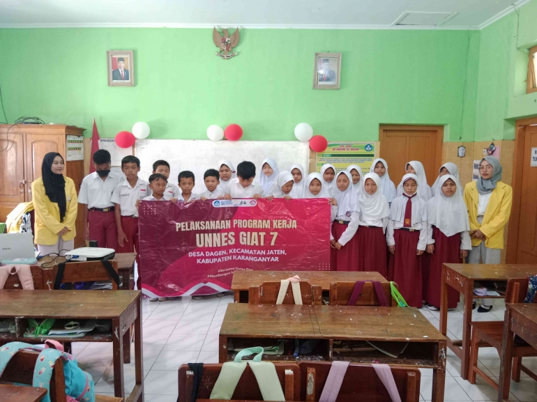
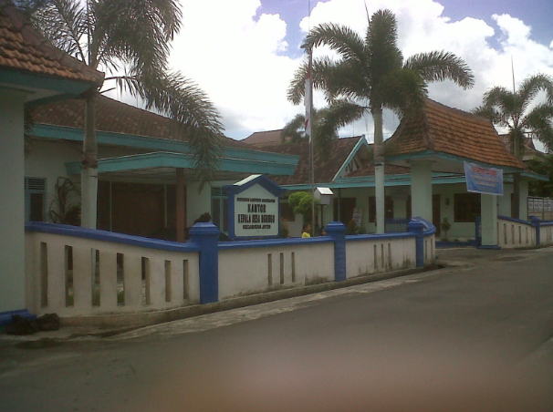
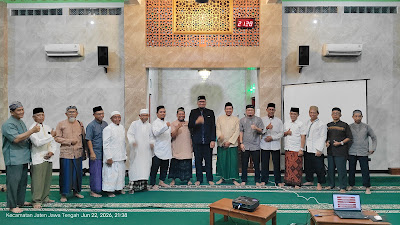
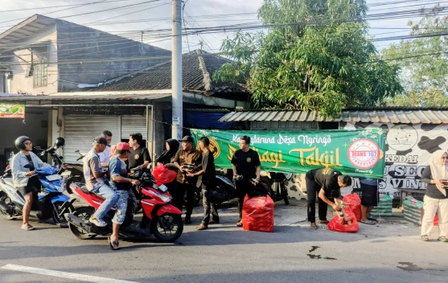
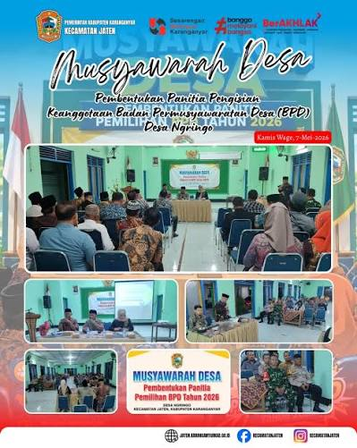
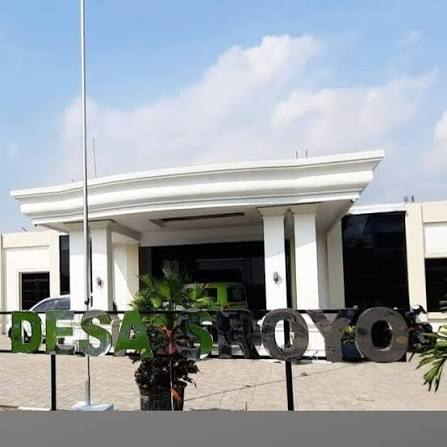

[Judul Berita]
[Ringkasan berita]
Baca selengkapnyaPortal informasi untuk warga Kelurahan Dagen, Ngringo, dan Sroyo, Kecamatan Jaten, Kabupaten Karanganyar. Pilih kelurahan melalui menu Daftar Kelurahan di bagian atas.
[Pengantar singkat layanan kecamatan]
[Deskripsi singkat]
[Deskripsi singkat]
[Deskripsi singkat]
[Deskripsi singkat]
[Ringkasan berita]
Baca selengkapnya[Ringkasan berita]
Baca selengkapnya[Ringkasan berita]
Baca selengkapnya[Deskripsi portal: tujuan, pengelola, dan manfaat bagi warga]
[Jawaban]
[Jawaban]
Selamat datang di portal resmi Desa Dagen. Kami hadir untuk memberikan kemudahan akses informasi, transparansi pelayanan publik, serta memperkenalkan potensi tradisi, budaya, dan keunggulan lokal desa kami kepada masyarakat luas.
Desa Dagen merupakan satu desa yang berada di Kecamatan Jaten, Kabupaten Karanganyar. Adapun sejarah berdirinya desa ini berasal dari sebuah kepercayaan terhadap adanya cikal bakal leluhur, yaitu makam Eyang Pangeran Dagi. Dari situlah maka kemudian muncul nama Dagen yang menurut masyarakat setempat adalah dusun pertama di Desa Dagen. Menurut kepercayaan masyarakat Desa Dagen. Oleh beberapa masyarakat, baik itu masyarakat dari luar maupun masyarakat Dagen sendiri, makam Eyang Pangera Dagi dipercaya dapat mendatangkan berkat. Misalnya, Masyarakat yang memohon restu untuk mencari jabatan. Sampai saat ini banyak masyarakat yang masih meyakini bahwa orang yang memohon restu di makam Eyang Pangeran Dagi akan benar-benar-benar mendapatkan berkah yang dimintanya.

Kepala Desa Dagen yang pertama memimpin yaitu Renggo Prahono. Kemudian Kepala Desa yang ke dua yaitu R.I Wiryo Suyoso. Kepala Desa yang ke tiga yaitu Soebakdi yang menjabat di Tahun 1955 sampai Tahun 1977. Kepala Desa yang ke empat yaitu Kadar Slamet, yang menjabat pada Tahun 1977 sampai dengan Tahun 1980. Kepala Desa yang ke lima bernama Sudiro yang menjabat dari Tahun 1981 sampai dengan Tahun 1989. Kepala Desa yang ke enam yaitu Supardi, S.H, yang menjabat dari Tahun 1989 sampai dengan Tahun 2007 . Kemudian Kepala Desa yang ke tujuh yaitu Wuryanto, S.T yang menjabat di Tahun 2007 sampai dengan Tahun 2013. Kepala Desa Dagen yang ke Delapan yaitu Andi Susilo Purnomo, S.H yang menjabat dari Tahun 2013 sampai Tahun 2019. Sampai saat ini program yang dilakukan Pemerintah Desa Dagen dalam mensejahterakan warganya sudah berjalan dengan lancar, dengan kepemimpinan kepala desa Bapak Andi Susilo Purnomo, S.H.
Desa Dagen terletak di sebelah timur Kota Solo. Desa ini termasuk lingkup Kecamatan Jaten, Kabupaten Karanganyar, Provinsi Jawa Tengah. Secara umum Desa Dagen mempunyai batas-batas wilayah sebagai berikut:
Letak Desa Dagen memang cukup strategis, dengan posisinya yang berada dipinggir jalan raya besar. Di batas desa sebelah barat dan selatan terdapat jalan besar utama yang biasa dilewati bus-bus angkutan umum. Jalan dari arah barat ke timur, yang merupkan sisi sebelah selatan Desa Dagen merupakan jalan utama dari arah Tawangmangu ke Solo ataupun sebaliknya. Jalan ini biasa di lewati bus angkutan jurusan Tawangmangu, Matesih atau Sukoharjo. Sedangkan sisi sebelah barat Desa Dagen adalah jalur utama dari barat kearah utara, yakni lalu lintas kearah Sragen atau Surabaya atau sebaliknya.
“Kebersamaan Dalam Membangun Desa Dagen Yang Sejahtera”
Dukuh di Desa Dagen:
Celep Kidul, Celep Lor, Dagen, Jetak, Songgorunggi, Turisari.
Perumahan di Desa Dagen:
Perumahan Loh Agung dan Perumahan GKS 7.
Kepala Desa (lurah)
Sekretaris Desa (Carik)
Kepala Seksi (Kasi)
Kepala Urusan (Kaur)
Kepala Dusun (Kamituwo/Kadus)
Wadah partisipasi masyarakat dalam pembangunan, pembinaan, dan pemberdayaan untuk meningkatkan kesejahteraan warga Desa Dagen.
Lembaga perwujudan demokrasi desa yang bertugas membahas dan menyepakati rancangan Peraturan Desa bersama Kepala Desa serta menampung aspirasi warga.
Lembaga yang bertugas mengoordinasikan pelayanan pemerintahan, pembangunan, dan ketentraman warga di wilayah tingkatan RW.
Lembaga kemasyarakatan terdepan yang membantu pelayanan administratif dasar warga, menjaga kerukunan, serta mengoordinasikan kegiatan lingkungan.
Panitia Pemilihan Kepala Desa (Pilkades) Desa Dagen resmi dilantik dan mengucap sumpah/janji jabatan. Seluruh warga diajak mendukung proses Pilkades agar berjalan damai, jujur, adil, dan kondusif.
Baca selengkapnyaBPD bersama Pemerintah Desa Dagen menggelar Musyawarah Desa (Musdes) Pembentukan Panitia Pilkades 2027 di Aula Balai Desa Dagen. Kegiatan dihadiri Camat Jaten, perangkat desa, BPD, tokoh masyarakat, hingga Karang Taruna untuk mengawal pesta demokrasi yang transparan dan jujur.
Baca selengkapnyaMelalui musyawarah yang tertib dan demokratis, Desa Dagen resmi menetapkan jajaran pengurus baru BUMDes Dagen Sejahtera periode 2026–2031. Kepengurusan baru ini diharapkan dapat membawa BUMDes semakin maju, mandiri, dan meningkatkan perekonomian warga desa.
Baca selengkapnya



Selamat datang di portal resmi Desa Ngringo. Kami hadir untuk memberikan kemudahan akses informasi, transparansi pelayanan publik, serta memperkenalkan kegiatandesa kami kepada masyarakat luas.

Desa Ngringo lebih dikenal dengan nama Palur, meski Palur merupakan salah satu dusun di Ngringo. Sebagian orang sering keliru menyebut Desa Ngringo sebagai Palur karena Dusun Palur juga bersebelahan dengan Desa Palur, Kecamatan Mojolaban, Kabupaten Sukoharjo. Desa Ngringo dan Desa Palur dipisahkan oleh Jalan Negara Solo-Surabaya/Karanganyar. Desa Ngringo dibagi menjadi 8 dusun yaitu Dusun Jurug, Dusun Banaran (terdiri dari Dusun Banaran, Dusun Kapohan, Jomboran, dan Daleman), Dusun Palur (terdiri dari Dusun Palur dan Ngringo), Dusun Karangrejo (terdiri dari Dusun Karangrejo dan Winong), Dusun Puntukrejo (terdiri dari Dusun Puntukrejo, Randurejo, Plosokerep, dan Dalon), Dusun Gunung Wijil (terdiri dari Gunung Wijil dan Nosido), Dusun Gunung Sari (terdiri dari Dusun Gunung Sari dan Benowo) dan Dusun Silamat (terdiri dari Dusun Silamat, Dusun Gerdu, dan Dusun Serut). Dalam melaksanakan tugasnya, Desa Ngringo dipimpin oleh seorang kepala desa atau lurah, dibantu oleh sekretaris desa atau carik, 3 orang staf, 3 orang pelaksana teknis lapangan, dan 8 kepala dusun yang melaksanakan tugas di Kantor Kepala Desa Ngringo.
Desa Ngringo tak lepas dari sejarah Eyang Kiai Jegang Wonolapan, seorang Waliyullah dari Demak. Masyarakat mengenal Kiai Jegang Wonolapan dengan nama Syekh Maulana Muhammad. Untuk mengenang Eyang Jegang Wonolapan, masyarakat setempat menggelar syukuran bersih dusun dengan kesenian Tari Tayub. Bersih dusun digelar setiap tahunnya pada Jumat Pahing antara Juli-Agustus. Di tahun ini, bersih dusun dilaksanakan pada Jumat (19/7/2024). Panitia bersih dusun, Sukasno, mengatakan bersih dusun diawali dengan kenduri di area makam Eyang Jegang Wonolapan di kampung Ngringo pada siang hari. Kemudian malam hari digelar seni tayub."Bersih dusun sudah dilaksanakan dari dulu turun-temurun sampai sekarang. Ini tradisi yang masih kami lakukan," katanya ketika berbincang dengan Espos.id, Jumat.
Dia menceritakan Eyang Jegang Wonolapan merupakan pendiri kampung Ngringo yang merupakan cikal bakal Desa Ngringo. Eyang Jegang Wonolapan ini merupakan waliyullah yang menyebarkan agama Islam di sini. Dahulu kala, dia menceritakan wilayah Ngringo merupakan alas belantara. Pohon alas berusia ratusan tahun bahkan masih ada di area makam Eyang Jegang Wonolapan. Beberapa pohon yang ada di antaranya randu alas dan kepoh.
"Dulu ada pohon asem yang usianya 600 tahunan di area makam. Tapi tahun lalu, tidak ada angin besar dan hujan, tiba-tiba roboh. Yang sekarang masih pohon randu alas dan kepoh," katanya.
Dia mengatakan dari bersih dusun, warga berharap panen padi melimpah dan terhindar dari paceklik. Hingga kini keberadaan makam Eyang Jegang Wonolapan masih terawat. Makam itu juga masih didatangi peziarah, terutama bagi mereka yang memiliki hajat tertentu seperti nyalon sebagai lurah, DPRD bahkan bupati atau wali kota.
VISI: Terwujudnya Desa Ngringo Yang Cerdas, Maju, Bermartabat dan Sejahtera.
MISI:
Kepala Desa
Sekretariat Desa
Kepala Dusun
Pelaksana Teknis
Desa Ngringo dipimpin oleh kepala desa (lurah) yang dibantu sekretaris desa (carik), 3 orang staf, 3 orang pelaksana teknis lapangan, dan 8 kepala dusun. Seluruh perangkat bertugas di Kantor Kepala Desa Ngringo.
Pasar tradisional yang menjadi pusat jual beli kebutuhan sehari-hari warga, mulai dari sembako, sayur, hingga barang dagangan lainnya. Pasar ini juga menjadi sumber penghidupan bagi banyak pedagang setempat.
Terminal yang melayani angkutan bus antarkota dan antarprovinsi, menghubungkan wilayah Solo Raya dengan arah timur seperti Karanganyar, Sragen, hingga Jawa Timur.
Pusat perbelanjaan modern yang menyediakan berbagai kebutuhan belanja dan hiburan bagi warga Ngringo dan sekitarnya.
Garasi dan pusat operasional perusahaan otobus Rosalia Indah. Keberadaannya membuka lapangan kerja dan ikut menggerakkan ekonomi di sekitar wilayah Palur.
Beberapa kantor bank berada di wilayah ini sehingga memudahkan warga dan pelaku usaha dalam menabung, bertransaksi, dan mengajukan pembiayaan.
Deretan toko dan usaha di sepanjang jalan utama yang melayani beragam kebutuhan masyarakat, sekaligus menjadi wadah bagi pelaku UMKM setempat.
Jalur utama yang membelah wilayah Ngringo dan Palur. Akses ini membuat Ngringo mudah dijangkau dan menjadi salah satu pintu keluar-masuk Solo Raya ke arah timur.
Makam pendiri kampung Ngringo yang masih terawat dan dikunjungi peziarah. Setiap tahun warga menggelar tradisi bersih dusun di sini pada Jumat Pahing antara Juli-Agustus.
Dewan Masjid Indonesia Desa Ngringo menyelenggarakan Pertemuan Rutin Bulanan di Masjid Mujahidin Banaran, Ngringo, Jaten, Karanganyar pukul 19.30 - 22.00 WIB, dihadiri pengurus DMI, takmir masjid dan mushala Desa Ngringo, jamaah berbagai wilayah Desa Ngringo.
Baca selengkapnyaAnggota Karang Taruna desa Ngringo, Jaten, Karanganyar saat membagikan takjil kepada masyarakat sekitar serta para pengguna jalan dalam rangka mengisi kegiatan bulan Ramadan 1447 H (foto: Arga/RRI)
Baca selengkapnyaMusyawarah Desa Berjalan Lancar! Kecamatan Jaten mendukung penuh pelaksanaan Musyawarah Desa Pembentukan Panitia Pemilihan Badan Permusyawaratan Desa (BPD) Desa Ngringo.
Baca selengkapnya


Desa Sroyo Mawa Rahayu: Mewujudkan Pemerintahan Bersih, Transparan, Bebas Korupsi, dan Sadar Hukum Menuju Masyarakat Sejahtera.
Desa Sroyo merupakan kawasan pemukiman yang juga menjadi salah satu pusat zona peruntukan industri besar di Kecamatan Jaten, Kabupaten Karanganyar. Ciri khas lingkungannya memadukan karakter agraris pedesaan tradisional Jawa dengan perkembangan industri modern di sekitarnya.
Sejarah Singkat: Di desa ini terdapat situs budaya penting, yaitu makam R.Ayu Aminah Lembah Manah (istri Sunan Giri sekaligus ibu dari Kyai Ageng Gribig) yang terletak di kawasan Wana Sroyo.
Visi: Terwujudnya tata kelola pemerintahan desa yang bersih, transparan, dan akuntabel demi pelayanan masyarakat yang prima.
Misi: Menanamkan nilai-nilai antikorupsi di setiap lini pelayanan, meningkatkan kesadaran hukum warga, serta mendorong kemandirian ekonomi desa berbasis potensi lokal.

Kepala Desa
Sekretaris Desa
Kaur Urusan
Berikut adalah berbagai layanan administrasi dan program unggulan di Desa Sroyo.
Melayani pengurusan surat pengantar KK, KTP, Kartu Identitas Anak (KIA), surat kelahiran, dan surat kematian.
Melayani pembuatan Surat Keterangan Usaha (SKU), Surat Keterangan Tidak Mampu (SKTM), dan Surat Pengantar Nikah (N1-N4).
Layanan konsultasi dan sosialisasi hukum secara berkala bagi warga karena statusnya sebagai Desa Sadar Hukum.
Resmi dibuka dengan slogan "Jajan Murah Gawe Ati Bungah", melibatkan 25 lapak milik warga untuk memperkuat produk lokal dan Usaha Mikro, Kecil, dan Menengah (UMKM).
Baca selengkapnyaPelatihan manajemen dan teknologi mesin tepat guna bagi Kelompok Ternak Kampung Ngelom (RT 04 / RW 05) untuk meningkatkan efisiensi pengolahan pakan ternak.
Baca selengkapnyaBekerja sama dengan EXALOS Indonesia, memberikan pelatihan kepada warga tentang cara mengenali jenis ular, langkah menghadapi kemunculan ular di pemukiman, dan pencegahan risiko gigitan.
Baca selengkapnya